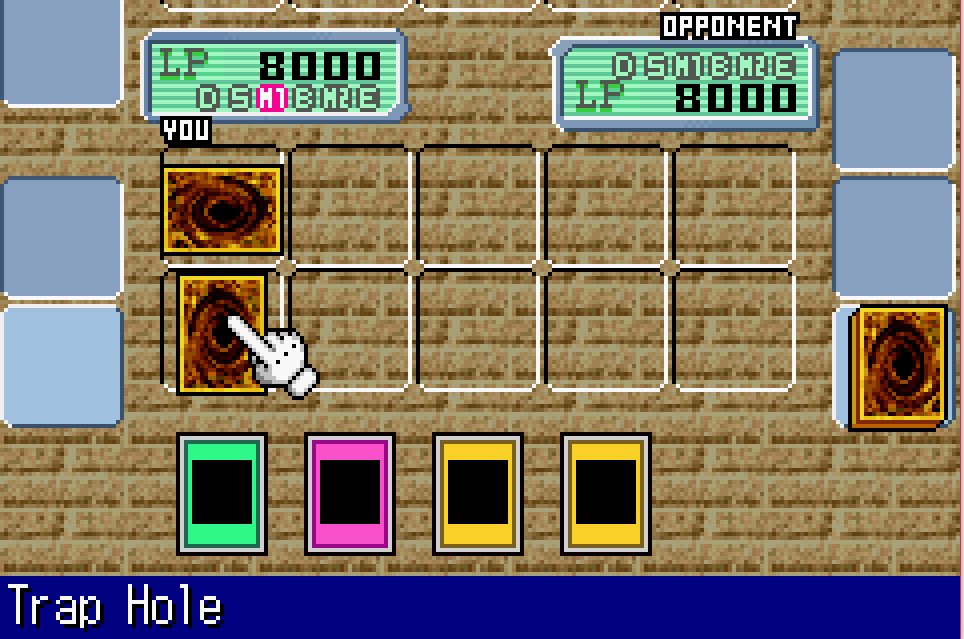
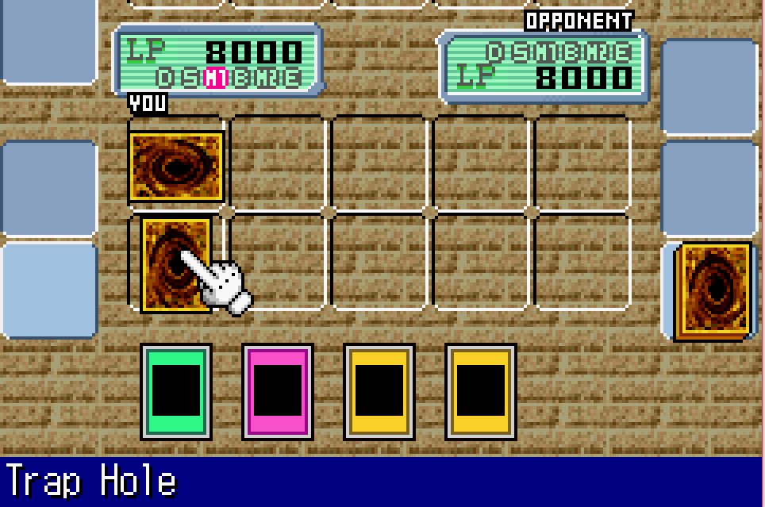

Yu-Gi-Oh! The Eternal Duelist Soul

Not-complete on 2017-06-09
2 / 5
Release Date: Oct 15, 2002
Meta Score: 81
Screenshots
 

Notes
So, another Yu-Gi-Oh game already, name Yu-Gi-Oh: The Eternal Duellist Soul. There are only 3 in the challenge list, so this is quite unlikely. At least I'm getting them out of the way early. This is the first Yu-Gi-Oh game to be released on the GBA (apart from Dungeon Dice Monsters which doesn't really count), whereas the 2006, the other game I played, was the last to be released.
Again, I played this for over 2 hours, and tried to give it a fair shake. Ultimately though, I'm dropping it as it again doesn't have a real main story mode and I'm not enjoying it much.
"Free Duel" is campaign in this game, but it's the same mode where you repeatedly duel a limited set of opponents for new cards, and unlock new opponents by beating the ones you've got multiple times. Disappointingly there are no challenges in this version. The opponents in this game are characters from the original anime, rather than monsters.
The way you earn new cards is also different. Rather than earning points and spending them on packs in the shop, you get one pack every time you beat an opponent, from a limited set. This gives less choice overload. It also doesn't tell you what % of the cards from each pack you've found which is less helpful.
The battles themselves are pretty similar, with slightly different UI. You can see any facsimile of the art without zooming in, making it harder to keep track of what's being played/in your hand. There's also a constantly moving background which is distracting. The field is also larger and doesn't all fit on the screen at once. It's also quite slow moving. The later game definitely improved on this front.
There's a simple calendar/time passing system. Each battle you play takes 1 day, and on some days special events happen. That seems to be about it though.
The game starts off a lot simpler/slower. Rather than starting out with a powerful combo deck, my starter deck was a simple "a bunch of monsters and spells" deck. The early opponents are similar. This made it easier to start out with, and to start improving by substituting monsters with better stats. I think I might have had more fun if I'd started with this game for that reason.
In summary, again a competent Yu-Gi-Oh simulator but it has not managed to make me actually like playing Yu-Gi-Oh. Easier to get started with than the other one.